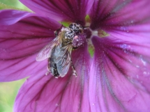

BIENENBLÜTENPOLLEN
Das zweite wichtige Nahrungsmittel das die Bienen produzieren ist der Bienenpollen. Nach Angaben von Dr. Stângaciu enthält Bienenpollen sowohl viele wichtige Vitamine und Spurenelemente, als auch alle wichtigen Aminosäuren und ist somit das wertvollste pflanzliche Eiweiß überhaupt. Somit stellt Bienenpollen den idealen Ausgleich für alle Vegetarier oder Menschen die weniger Fleisch essen wollen dar. Nach seinen Angaben entsprechen dabei 100g Bienenpollen 500g Rindfleisch oder 7 Hühnereiern. Sehr wichtig ist es, den Bienenpollen richtig aufzuschließen, da ansonsten seine wertvollen Bestandteile vom Körper nicht aufgenommen werden können. Er empfiehlt dazu den Bienenpollen in Honig zu mischen und ihn dort mindestens 14 Tage lang reifen zu lassen, da erst dann die sogenannte Exine, eine äußerst harte Schale um die Pollenkörner, die diese Jahrtausende konserviert, aufgebrochen ist. Mit einer ähnlichen Mischung die bereits im Winter regelmäßig eingenommen wird, kann übrigens auch den meisten Pollenallergikern und Heuschnupfengeplagten geholfen werden. Auch die Bienen schließen in einem wochenlangen Fermentationsprozeß mit Honig den Pollen auf, wenn sie ihn zu Bienenbrot umarbeiten. Pro Tag sollte man nicht mehr als 30g Bienenpollen zu sich nehmen. Anfangs, wenn sich die Verdauung noch nicht auf Bienenpollen eingestellt hat sollte der Bienenpollen nach den Mahlzeiten, später besser zwischen oder vor den Mahlzeiten.
Die positive Wirkung des Bienenpollen ist in Untersuchungen über Leberkrankheiten, Prostataleiden, Verstopfung (vor allem wenn die Dickdarmflora abgestorben ist, z.B. nach einer Behandlung mit Antibiotika), Kreislaufstörungen, Anämie, Arteriosklerose, Gefäßbrüchigkeit, Bluthochdruck und andere Krankheiten nachgewiesen worden. So hat man in Bukarest eine Studie über Bienenpollenbehandlung an Patienten mit schweren Leberkrankheiten wie Hepatitis und Leberzirrhose durchgeführt, in der nach zwei Jahren 50% der Patienten geheilt waren. Die Wirkung des Bienenpollen ist kräftigend, stimulativ, euphorisierend (gegen Depressionen), entgiftend (nach äußerer Vergiftung, auch durch radioaktive Strahlung, oder auch bei innerer Vergiftung, z.B. bei einem Nierenleiden) und antibiotisch. Bienenpollen wird aber nicht nur in der Apitherapie eingesetzt, sondern auch in der Oligotherapie, da er sehr reichhaltig an Spurenelementen ist. Der menschliche Körper enthält 28 verschiedene Mineralien, davon werden 14 als lebensnotwendig angesehen. Bienenpollen enthält normalerweise alle 28 Mineralien, die Prozentanteile schwanken allerdings, wie dies bei einem Naturprodukt zu erwarten ist. Für Diabetiker ist nach Aussage von Dr. Stângaciu Bienenpollen nicht zu empfehlen, da er den Blutzuckerspiegel erhöht, ebenso kann es bei Magenübersäuerungen anfangs zu Problemen kommen.
Wirkt als Antiallergikum (z.B. bei Heuschnupfen) | Wirkt als Antibiotikum | Fördert den Appetit und wirken gegen Abmagerung | Wirkt als Biostimulans und regen Stoffwechselprozesse an |
Verbessert das Blut, hilft bei der Herstellung von Hämoglobin und der roten Blutkörperchen | verkleinert das Risiko von genetischen Krankheiten | Entgiftet den Körper | Erleichtert die Geburt |
Hat eine euphorisierende Wirkung | Fördert den Aufbau der Körpersubstanzen | Wirkt gegen Arteriosklerose | Wirkt gegen viele Bakterien |
Wirkt gegen zu hohes Blutcholesterin, freie Fettsäuren, Triglyzeride , Betalipoproteine und Albumine | Wirkt gegen Bluthochdruck | Stillt Blutungen und fördert die Wundheilung | Wirkt entzündungshemmend |
Hilft bei Karies | Wirkt gegen Oedeme (Wassersucht) | Wirkt gegen Parasiten | Unterstützt die Funktionen der Leber |
Hilft bei Streß und Nervosität und stärkt das vegetative Nervensystem | Versorgt die gesamte Körpermuskulatur (inklusive der inneren Muskeln der Körperorgane) | Verbessert das Merkfähigkeit und andere Gedächtnisfunktionen | Erhöht die Vitamin C - Konzentration in den Nebennierendrüsen, Thymus, Dünndarm, Dickdarm und Leber |
Hilft beim Aufbau des Körpers | Ist ein hochwertiges Nahrungsmittel | Hilft bei Depressionen | Verbessert die Dickdarmfunktion |
Unterstützt die Sehkraft und die Augenfunktionen | Hilft bei Kreislaufstörungen und Anämien | Beseitigt Mangelzustände und verlangsamt die Seneszenz | Stärkt die sexuelle Kraft (besonders bei Männern) |
Hilft bei Müdigkeitszuständen aller Art | Schützt den Körper gegen negative Strahlen | Stärkt das körpereigene Immunsystem | Verbessert die Funktion der Prostata |
Ist ein hervorragender Energiespender, versorgt den menschlichen Organismus mit allen notwendigen Biostoffen und beugt so Mangelerscheinungen vor |
BIENENBROT
Bienenbrot oder Perga wird Blütenpollen genannt, der von den Stockbienen bei der Einlagerung in die Wabenzellen mit dem Speichel der bearbeitenden Bienen vermischt und dadurch fermentiert wird. Durch diese Fermentierung wird der Pollen haltbar. Darüber hinaus wird der Pollen in der Zelle mit einer für das menschliche Auge nicht sichtbaren Proplisschicht umschlossen, die ihn vor Bakterien- und Pilzbefall schützt.
Der Name Bienenbrot gründet sich auf den Umstand, als Futtermittel für Arbeiterinnen, aber auch der Brut zu dienen. Frischer Pollen von den Blüten ist nicht lange haltbar, er beginnt schnell zu schimmeln oder zu gären, wenn er nicht rasch getrocknet wird. Der von den Bienen eingelagerte Pollen hingegen ist haltbarer. Außerdem ist Pollen sehr schwer aufzuschließen, um die wertvollen Inhaltsstoffe nutzbar zu machen. Dies geschieht unter anderem durch die Fermertierung. An diesem Prozess sind dreierlei Mikroben– Pseudomonas, Lactobacillus und Saccaromyces – beteiligt. Ansonsten wird versucht, durch Milchsäuregärung die Aufschließung herbeizuführen.